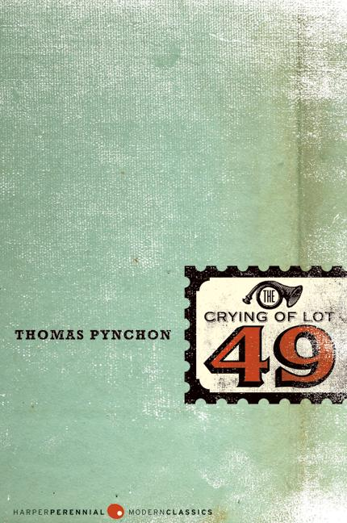

Check out Ott's Good Earth.
To prepare guacamole, start by mashing ripe avocados in a bowl. Add finely chopped onions, tomatoes, cilantro, and a squeeze of lime juice for flavor. Season with salt and pepper, and for extra spice, toss in diced jalapenos. Mix everything together until smooth but slightly chunky.
To eat guacamole, serve it as a dip with tortilla chips, spread it on toast, or use it as a topping for tacos, burritos, or salads.
| V. | The Crying of Lot 49 | Lolita | Ficciones |
|---|---|---|---|
|  | |
||
| Thomas Pynchon | Thomas Pynchon | Vladimir Nabokov | Jorge Luis Borges |
| Folows the exploits of a discharged U.S. Navy sailor named Benny Profane, his reconnection in New York with a group of bohemian artists and hangers-on known as the Whole Sick Crew, and the quest of an aging traveller named Herbert Stencil to identify and locate the mysterious entity he knows only as "V.". | Follows Oedipa Maas, a young Californian woman who begins to embrace a conspiracy theory as she possibly unearths a centuries-old feud between two mail distribution companies. Is there really a conspiracy, is her wealth ex-husband playing a prank on her, or is she slowly losing her mind? | Lolita is a controversial novel that tells the story of Humbert Humbert, a middle-aged man who becomes obsessed with Dolores Haze, a 12-year-old girl whom he nicknames "Lolita." The novel explores Humbert's manipulative and predatory behavior while trying to justify his actions to the reader. | A collection of short stories by Argentine writer and poet Jorge Luis Borges. The stories encompass magical realism, historical fiction, and more. |